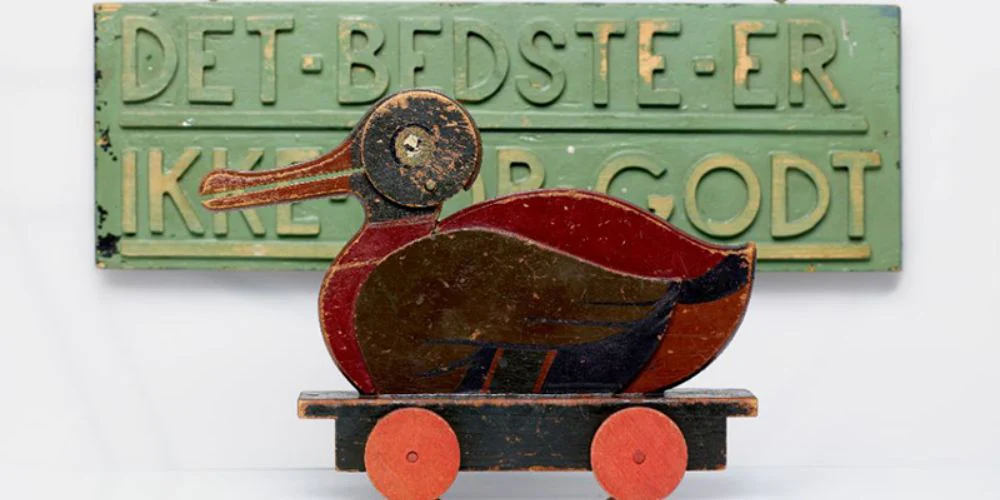
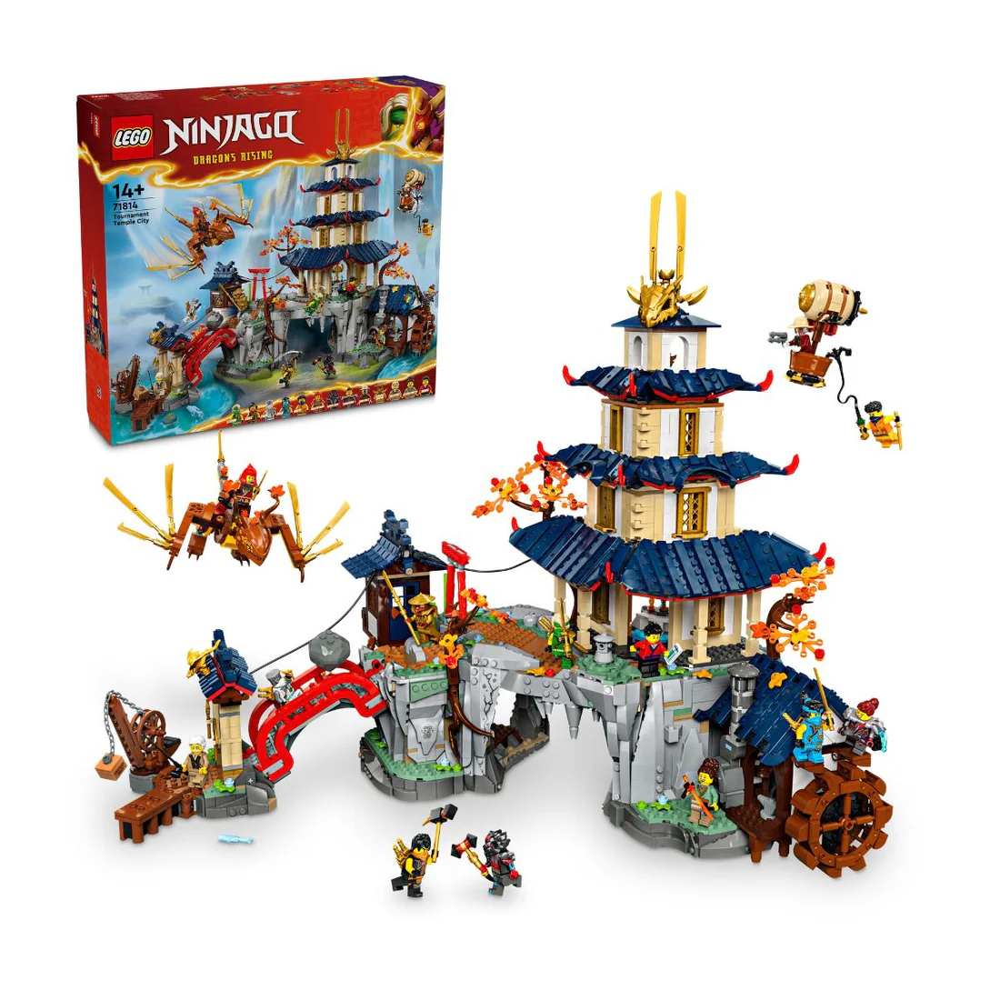

LEGO : Sự thành công từ một xưởng gỗ trên bờ vực phá sản
Giới thiệu đầu
Lego là một trong những thương hiệu đồ chơi nổi tiếng nhất trên thế giới,
được thành lập vào năm 1932 tại Đan Mạch.
Ban đầu, công ty sản xuất đồ
chơi gỗ, nhưng sau đó đã chuyển sang sản xuất các viên gạch nhựa có thể
kết nối với nhau, tạo nên những mô hình đa dạng và sáng tạo.

Câu chuyện về một xưởng gỗ bị cháy :
Câu chuyện của LEGO bắt đầu tại một xưởng gỗ của Đan Mạch vào những năm 1910. Thời điểm đó, Ole Kirk Christiansen (1891-1958) chỉ là một thợ mộc bình thường với nhiều tham vọng. Khi còn trẻ, Christiansen có sở thích đục, chạm khắc gỗ nên ông quyết định mở một xưởng mộc vào năm 1916.
Lúc đầu, xưởng của Christiansen chuyên sản xuất các vật dụng nội thất như bàn, ghế…và công việc buôn bán khá phát đạt. Đến năm 1924, khi ông đang tìm cách phát triển công việc kinh doanh thì có một sự cố không may khiến xưởng của gia đình Christiansen phút chốc hóa thành tro bụi.
Không chịu khuất phục sau những tổn thất nặng nề từ đám cháy, Christiansen nỗ lực xây dựng lại một phân xưởng mới, thậm chí còn lớn hơn. Bi kịch lại xảy đến vì năm 1929, thị trường chứng khoán Mỹ sụp đổ khiến thế giới rơi vào khủng hoảng. Đan Mạch cũng bị cuốn vào cuộc đại suy thoái và việc kinh doanh của Christiansen gần như dậm chân tại chỗ.

Khởi đầu của LEGO :
Thời điểm ấy. do không đủ tiền trả lương nên Christiansen buộc phải cho phần lớn thợ trong xưởng gỗ nghỉ việc. Ông đã phải vật lộn kiếm sống để nuôi bản thân và gia đình. Xưởng mộc của gia đình Christiansen không có máy móc, tất cả đều được làm thủ công nên năng suất rất thấp, không thể cạnh tranh với các cơ sở sản xuất khác. Bị đẩy đến đường cùng, ông đã nghĩ ra cách sử dụng gỗ tạo ra hàng hóa rẻ tiền có thể bán được, trong đó bao gồm đồ chơi dành cho trẻ em. Bởi đồ chơi làm rất nhanh, lại dễ bán vì có giá thành rẻ.
Chỉ vài tháng sau, Christiansen cho ra đời hàng loạt sản phẩm như những chiếc xe, máy bay, tàu thuyền cùng một số con vật như chó, ngựa, cừu…, được làm từ gỗ bạch dương, và phủ những lớp sơn nhiều màu sặc sỡ, bắt mắt. Đồ chơi bán chạy nhất của ông là một chú vịt bằng gỗ có thể đóng mở chiếc mỏ khi người chơi kéo dây.
Chú vịt bán chạy nhất thời điểm đó

Năm 1934, Christiansen chuyển đổi xưởng thành công ty với tên gọi LEGO, là viết tắt của hai từ “Leg godt” trong tiếng Đan Mạch, có nghĩa là “chơi hay”. Đến năm 1935, LEGO có tổng cộng 42 loại đồ chơi khác nhau bằng gỗ, tất cả đều được đăng ký độc quyền kiểu dáng. Thay vì thao tác bằng tay như trước đây, công nhân đã bắt đầu sử dụng máy bào, máy khoan, máy cưa, máy tiện để làm đồ chơi.
Một lần nữa, xưởng gỗ bị thiêu rụi :
Năm 1942, khi Đức Quốc xã chiếm đóng Đan Mạch, xưởng gỗ của Christiansen một lần nữa bị thiêu rụi do chiến tranh. Chiến tranh thế giới thứ hai kết thúc, mặc dù vốn liếng vẫn đủ để ông gây dựng lại nhưng nguồn nguyên liệu là gỗ bạch dương không còn nhiều. Một số hãng sản xuất đồ chơi khác bắt đầu chuyển sang dùng nguyên liệu nhựa. Đồ chơi nhựa là xu thế tất yếu, nhưng phải làm ra đồ chơi gì và đáp ứng đủ yếu tố mới lạ, giá rẻ mới là vấn đề.
Năm 1946, Christiansen mua những chiếc máy ép phun nhựa đầu tiên. Ông cũng sáng tạo ra một thứ đồ chơi mới - những “viên gạch” bằng nhựa hình chữ nhật nhiều màu, có thể lắp ráp với nhau bằng những mẩu nhỏ hình tròn nằm trên một mặt của viên gạch. Christiansen gọi chúng là Gạch Liên kết Tự động (Automatic Binding Brick). Với mẫu mã theo từng chủ đề, LEGO nhanh chóng trở thành loại đồ chơi bán chạy nhất ở châu Âu và châu Mỹ vào năm 1951. Với một bộ LEGO, người ta có thể xây dựng cả một thành phố có nhà cửa, xe cộ, con người, cây cối, sông, hồ…
Điều thiết yếu tạo nên thành công của LEGO hiện tại :
Doanh số bán hàng của công ty chỉ tăng mạnh vào dịp Giáng sinh khiến Godfred cảm thấy đồ chơi LEGO đang thiếu một thứ thiết yếu. Ông nhận ra rằng trẻ em phát triển rất nhanh, vậy nên những món đồ chơi làm sẵn không đủ thử thách. Đồ chơi cần kích thích trẻ sử dụng trí tưởng tượng và sự sáng tạo của mình.
Thay vì cung cấp đồ chơi làm sẵn cho trẻ em, LEGO mang đến một cơ hội để trẻ hiện thực hóa những vật dụng qua các bộ LEGO. "Bí quyết" này đã đem lại bước đột phá trong kinh doanh của LEGO. Sau đó, công ty tiếp tục cải tiến sản phẩm bởi những công trình xây dựng chưa thể dính vào nhau, chỉ cần chạm nhẹ thì một lâu đài đồ sộ có thể trở thành đống đổ nát trong tích tắc. Gottfried đã tự mình giải quyết nan đề này và vào năm 1958, ông được cấp bằng sáng chế cho viên gạch LEGO mang tính biểu tượng với các ống bên trong làm cho các viên gạch dính lại với nhau. Hệ thống đồ chơi LEGO trở nên rất thành công và công ty bắt đầu mở rộng sang các quốc gia khác.
Các sản phẩm của tập đoàn LEGO đều được sản xuất bằng dây chuyền hiện đại. LEGO áp dụng công nghệ máy tính với những chỉ số chính xác gần như tuyệt đối để các miếng ghép có thể lắp ráp với nhau một các hoàn hảo. “Nếu không có những vụ cháy, chưa chắc chúng tôi đã có động lực để làm nên LEGO như hiện tại”, Johannes, con trai trưởng của Christiansen, chia sẻ.
Bộ Lego 71814 Ninjago với giá 8 triệu đồng

Link sản phẩm :
Bộ Lego 71814 Ninjago
Lên đầu trang
©Mykingdom
My Gmail
Cảm ơn bạn đã đọc !!!